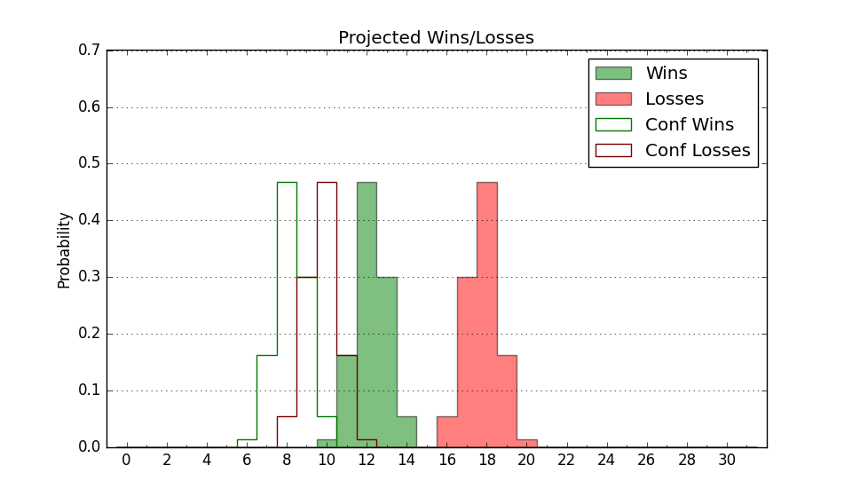

| Home | Game Probabilities | Conferences | Preseason Predictions | Odds Charts | NCAA Tournament |
| City: | Boston, Massachusetts | |
| Conference: | Patriot (7th)
| |
| Record: | 8-11 (Conf) 14-17 (Overall) | |
| Ratings: | Comp.: -8.8 (264th) Net: -8.8 (264th) Off: 96.7 (292nd) Def: 105.6 (223rd) SoR: 0.0 (133rd) |
| Remaining | ||||||
|---|---|---|---|---|---|---|
| Date | Opponent | Win Prob | Pred. | |||
| Previous | Game Score | |||||
| Date | Opponent | Win Prob | Result | Off | Def | Net |
| 11/7 | Northeastern (308) | 74.0% | W 72-63 | -6.1 | 4.7 | -1.4 |
| 11/11 | @Connecticut (6) | 1.3% | L 57-86 | 0.8 | 0.8 | 1.5 |
| 11/17 | Hartford (362) | 95.0% | W 102-66 | 26.9 | -8.4 | 18.5 |
| 11/20 | @New Hampshire (278) | 37.9% | W 64-57 | 3.1 | 9.2 | 12.2 |
| 11/26 | (N) Southeast Missouri St. (255) | 48.1% | L 52-63 | -19.0 | 5.3 | -13.6 |
| 11/27 | @Milwaukee (222) | 26.0% | L 46-67 | -24.4 | 3.8 | -20.6 |
| 11/28 | (N) UC Davis (156) | 27.3% | L 70-81 | -9.9 | 7.9 | -1.9 |
| 12/2 | @Merrimack (302) | 43.2% | W 68-54 | 15.8 | 14.2 | 29.9 |
| 12/7 | @Notre Dame (171) | 18.6% | L 75-81 | 12.9 | -9.4 | 3.5 |
| 12/10 | @Marist (284) | 38.6% | W 72-70 | 11.0 | -3.3 | 7.7 |
| 12/13 | Dartmouth (269) | 66.3% | W 67-59 | -3.4 | 2.5 | -0.8 |
| 12/21 | @UMass Lowell (131) | 13.7% | L 60-68 | -8.4 | 11.1 | 2.6 |
| 12/30 | Navy (174) | 44.4% | L 58-75 | -8.7 | -21.3 | -30.0 |
| 1/2 | @Bucknell (301) | 42.1% | W 69-61 | 11.7 | 5.8 | 17.5 |
| 1/5 | Lafayette (251) | 62.1% | W 73-69 | 10.5 | -7.3 | 3.2 |
| 1/8 | @American (257) | 34.0% | L 74-76 | 8.5 | -10.2 | -1.7 |
| 1/11 | @Colgate (113) | 11.0% | L 71-77 | 4.7 | 10.7 | 15.4 |
| 1/14 | Army (256) | 63.6% | L 74-83 | 13.8 | -33.9 | -20.1 |
| 1/18 | @Navy (174) | 19.0% | L 45-63 | -22.6 | 7.8 | -14.7 |
| 1/21 | Loyola MD (321) | 76.3% | W 66-53 | -1.9 | 14.3 | 12.4 |
| 1/23 | Colgate (113) | 29.7% | L 51-64 | -24.0 | 8.4 | -15.6 |
| 1/29 | @Lehigh (281) | 38.4% | L 55-66 | -4.8 | -7.1 | -11.9 |
| 2/1 | Holy Cross (344) | 82.9% | L 70-82 | -7.9 | -24.3 | -32.2 |
| 2/4 | @Loyola MD (321) | 48.6% | W 68-67 | 5.2 | -5.9 | -0.7 |
| 2/8 | American (257) | 63.6% | W 60-54 | -3.8 | 9.2 | 5.4 |
| 2/11 | @Lafayette (251) | 32.5% | L 65-69 | 2.2 | -4.2 | -2.0 |
| 2/15 | @Holy Cross (344) | 58.8% | L 69-71 | 0.7 | 0.4 | 1.1 |
| 2/18 | Bucknell (301) | 71.2% | W 77-61 | 23.7 | -0.8 | 22.9 |
| 2/22 | @Army (256) | 34.0% | W 73-67 | 4.5 | 4.8 | 9.3 |
| 2/25 | Lehigh (281) | 68.0% | W 59-56 | -6.8 | 6.4 | -0.5 |
| 3/2 | @Army (256) | 34.0% | L 69-71 | -5.7 | 8.8 | 3.1 |
| Stats & Trends | |||||
|---|---|---|---|---|---|
| Current | Day | Week | Month | Season | |
| Composite | -8.8 | -0.0 | -0.1 | +1.0 | +0.6 |
| Comp Rank | 264 | -1 | +2 | +19 | +7 |
| Net Efficiency | -8.8 | -0.0 | -0.1 | +1.0 | -- |
| Net Rank | 264 | -1 | +2 | +18 | -- |
| Off Efficiency | 96.7 | -0.0 | -0.0 | +0.5 | -- |
| Off Rank | 292 | +1 | -- | -4 | -- |
| Def Efficiency | 105.6 | -0.0 | -0.1 | +0.6 | -- |
| Def Rank | 223 | -- | +2 | +29 | -- |
| SoS Rank | 316 | -- | +1 | +3 | -- |
| Exp. Wins | 14.0 | -- | -- | +0.6 | +0.4 |
| Exp. Conf Wins | 8.0 | -- | -- | +0.6 | -1.0 |
| Conf Champ Prob | 0.0 | -- | -- | -- | -6.1 |

| Advanced Stats | ||
|---|---|---|
| Stat | Value | Rank |
| Off Eff FG % | 0.457 | 332 |
| Off Ast Ratio | 0.114 | 348 |
| Off ORB% | 0.264 | 199 |
| Off TO Rate | 0.161 | 240 |
| Off FT Ratio | 0.287 | 270 |
| Def Eff FG % | 0.511 | 187 |
| Def Ast Ratio | 0.134 | 110 |
| Def ORB% | 0.271 | 196 |
| Def TO Rate | 0.144 | 262 |
| Def FT Ratio | 0.404 | 332 |